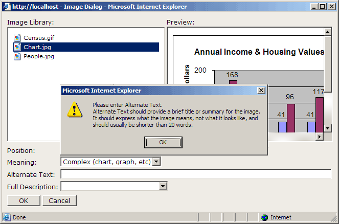

Screen shot of OneNet Editor prompting for missing image description.
Accessibility Checking Features
Heading Check:
The heading check provides a "table of contents" view of all the headings on a page. If the headings do not properly provide a table of contents for the page, headings may need to be added, removed, or set to the right levels. Headings never should be used just to make text look larger. The heading check also notifies the author if the document contains bold paragraphs that may be meant to be headings.
List Check:
The list check displays potentially inappropriate lists on the page. Lists created by typing asterisks, numbers, or letters at the beginning of each line instead of using the list menu options are flagged. If the possible list should be a list, select a list type option from the drop-down list.
Link Check
The link check lists all the links on the page and their addresses so the author can ensure that the link text is meaningful and clearly indicates the link's destination or function. The user should be able to tell where each link will take him or her or what it will do by reading just the text listed. Potentially incorrect link text (link text that is not clear, missing link text, same link text used for different addresses, same addresses used with different link text, and link text that is shorter than four characters) is flagged. Links also may be tested from the link check dialog.
Image Check
The image check lists all the images on the page along with their type and alternate text. An image's alternate text should convey the same meaning as the image. The image check alerts the author of missing alternate text and missing full descriptions for complex images. The author also is notified of alternate text containing the words "image," "graphic," "picture," or "photo" or alternate text that is fewer than two words or greater than twenty words in length.
Document Check
The document check lists all the links to documents on the page with their link text so the author can ensure that the link text contains the title of the document and the file type (e.g., pdf, doc) and shows the means by which an accessible version is provided.
Table Check
The table check displays each table's summary and table showing the headers for each data cell in a table. Confirm that the displayed headers correctly describe the text in the data cell. Also ensure that the table makes sense when read in the order shown.